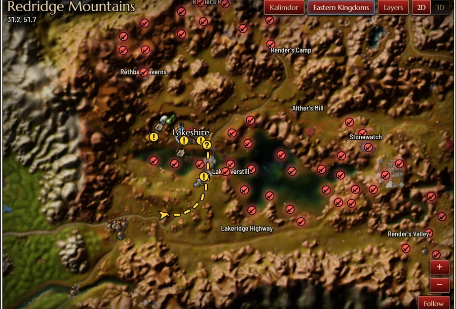
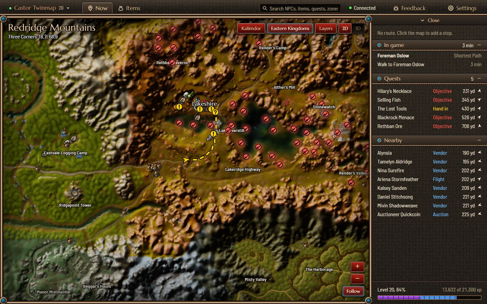
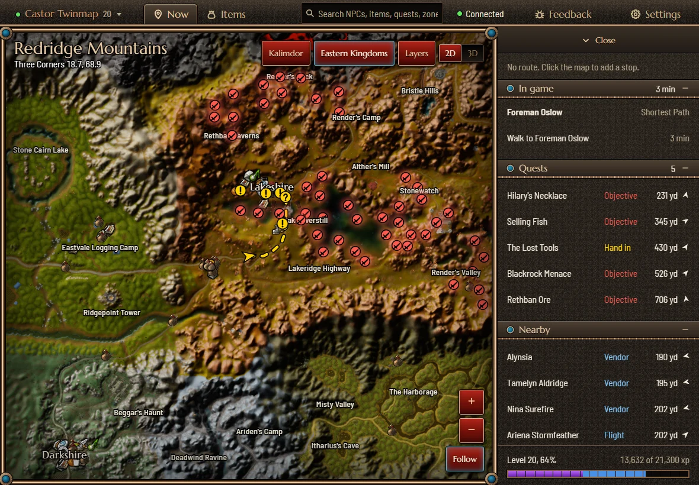
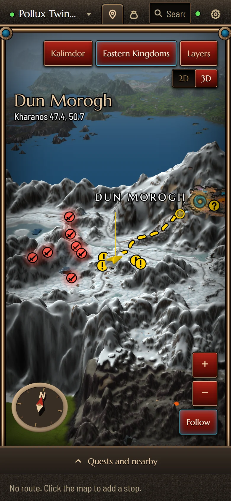
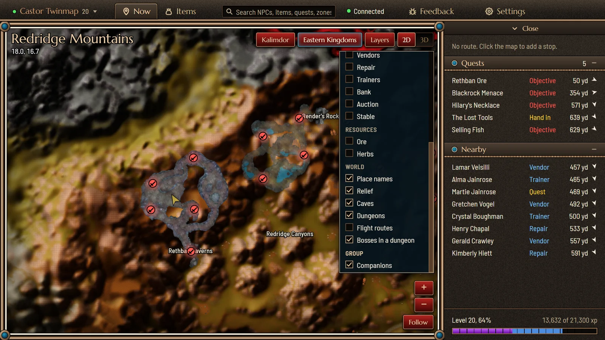

Your position on the map, in real time
In 2D or in 3D, even inside dungeons. World of Warcraft: Forever on your second screen.

-
1. The addon
Install Twinmap Forever from CurseForge and restart the game.
Get the addon on CurseForge -
2. The app
Free, for Windows 10 and 11. It builds the map from your own game files and updates itself.
In English, Français, Deutsch, Español, Русский, 한국어 and 简体中文.
Get the app for Windows -
3. Play
Open the app and just play. Your arrow appears on its own.
2D or 3D, one switch
One click turns the flat map into the land itself: mountains, valleys, coasts and rivers in relief, built from your own game files. Turn it, tilt it, and zoom from a whole continent down to a single village. Your arrow, your quests and your route are all there, standing on the ground.
Come close to a cave, a mine or Ironforge and the ground opens: you see the rooms where they really are, under the hill. One more click and you are back in 2D, at the same place. On a phone and a tablet too.
In 2D and in 3D the map can turn with your character, as Rotate Minimap does in the game, or keep north up.
Even inside dungeons
Your arrow moves through the rooms of dungeons and raids as you do, with every boss marked on the way. You can open a dungeon's map from its door, before you go in.
The game gives addons no position in there, so Twinmap reads your place from the minimap on your screen. Keep it visible, not rotating and zoomed all the way out.
Search an item, find who sells it
Type the name of an item, an NPC, a quest or a dungeon. For an item the search lists who sells it, the nearest first, with the distance to each.
Choose one and the map goes there, with everything that vendor sells, the prices, and how many you already hold in your bags and in the bank. A trainer shows what you can learn now and what it costs.
Every character, with the game closed
Twinmap keeps a sheet of each character you play: what is worn, bags, bank, money and statistics, with a picture taken from the game. Click the name at the top to look at another one, even with the game closed.
A filter leaves lit what you are looking for, and tells you which other character holds it.
The auction house, hour by hour
The Auction House has the prices of the house your character sells at, every hour, kept on your computer. The search forgives a wrong letter, filters by level, quality and price, and keeps each kind of an item apart: "of the Eagle" is not "of the Monkey".
The page of an item charts how its price moved over a day or a week. Draw a line on it, and Twinmap tells you when the price crosses it, in the app and, if you like, in the game.
My items prices your bags, bank and gear on that house, beside what a vendor pays, and says which pays more.
On any screen you have
A second monitor is the best seat. No second monitor? Open the same live map in the browser of a laptop, a tablet or a phone on your home network: scan a code once, and there is nothing to install.



Show only what you need
Your quests, your party, flight masters, inns, trainers, repair, banks, ore, herbs, dungeons, caves and mines, the relief of the ground: each one a layer you turn on or off.
And it goes both ways: mark a point or build a route on Twinmap, and it appears in the game.

How it works
- From the game to the app
- The addon draws a line one pixel tall at the edge of the game window and writes your position, your zone, your quests and what your character carries, wears and knows in the colors of its pixels. The app reads that line from the screen. It never touches the game's memory and never plays for you.
- The map
- Built on your computer from the files of your own game, so it always matches your version. No map is downloaded.
- Privacy
- Nothing leaves your computer unless you send it, or turn on Help improve Twinmap, which is off until you do. No account, no ads, no tracking. Twinmap connects to GitHub to look for a newer version, to prices.twinmap.app for the prices of your auction house, and to our server when you send a message from the Feedback window or share anonymous data about the world of Forever. Privacy
- Photosensitivity
- The addon sends data by changing the colors of a one pixel line at the edge of the game window, many times per second. Its settings in the game can slow it down or pause it, and the pause button at the top of the app pauses it too.
Free, open, and still growing
- The code
- All of it is public on GitHub, under the GNU General Public License, version 3. Free to use, with no ads and no paid features, and it will stay that way.
- Contribute
- Anyone can. Report a bug or propose an idea, or send a pull request with code. No GitHub account? Write to dev@twinmap.app, in English or in Italian.
- What is planned
- Travel times and flight paths, zones colored by level, your whole quest log, professions and reputations, alerts, a shopping list, a macro builder, leveling guides. Plans, not promises: the full list is on GitHub.
- Support
- Twinmap is made in spare time and costs nothing. If it is useful to you and you feel like it, you can buy me a coffee on Ko-fi. It is never needed, and it unlocks nothing.
Get Twinmap
- 1. The addon
- Get the addon on CurseForge
- 2. The app
-
Get the app for Windows
Each installer is scanned by VirusTotal when it is published.